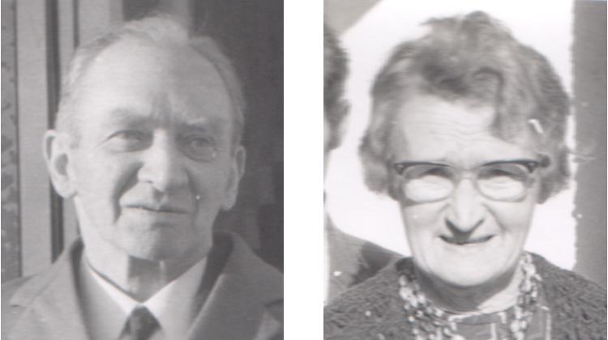

Thanks to Mary Looby
Many thanks to Mary Looby. Over the course of many years Mary has interviewed people about our family history. A combination of her research, personal knowledge, information passed down to her through the family, and probably information passed to her from other genealogists in the family, forms the basis of the family tree on this site. Your work gathering these pieces of information together makes it so much easier for the rest of us. Thank you.
Starting Point
The page of Thomas Conway b1938 (or the pages of his siblings) will show you a visual tree of the ancestors of Thomas Conway b1900 and Bridie Clohessy. That's as good a starting as any. Alternatively, in the menu bar above you can use the Individuals, Surnames and Families pages to find anyone in the tree.
Do You Have Stories to Add to This Tree?
Most family trees are little more than a collection of names and dates. You can help bring the past to life if you have stories about people in this tree and the inclination to type them up. Send your stories to
, and I'll add them to the site.
To Add People or Information...
Send an email to with any new information or corrections. You can find instructions on how to export your family tree from Ancestry, MyHeritage etc, on the Introduction page. That page also has instructions on how to download the tree from this site to import it into your own.
Updates and Further Instructions
Click the
Update tab above to see the latest updates to the site.
For instructions on how to use this site in mind boggling detail see the
Introduction page.